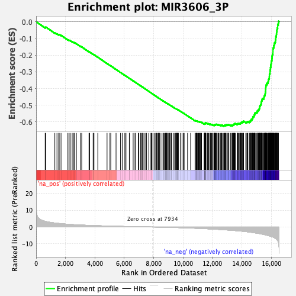
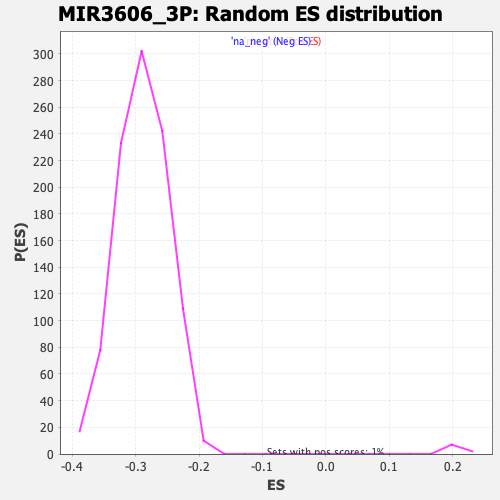

| | | Dataset | DE_genes2 |
| Phenotype | NoPhenotypeAvailable |
| Upregulated in class | na_neg |
| GeneSet | MIR3606_3P |
| Enrichment Score (ES) | -0.6253831 |
| Normalized Enrichment Score (NES) | -2.1632502 |
| Nominal p-value | 0.0 |
| FDR q-value | 0.0 |
| FWER p-Value | 0.0 |
Table: GSEA Results Summary

Fig 1: Enrichment plot: MIR3606_3P
Profile of the Running ES Score & Positions of GeneSet Members on the Rank Ordered List
| PROBE | GENE SYMBOL | GENE_TITLE | RANK IN GENE LIST | RANK METRIC SCORE | RUNNING ES | CORE ENRICHMENT | | 1 | FAM118B | | | 616 | 3.374 | -0.0336 | No |
| 2 | NEDD4L | | | 664 | 3.281 | -0.0322 | No |
| 3 | FAM114A1 | | | 1274 | 2.382 | -0.0666 | No |
| 4 | NOTCH2 | | | 1419 | 2.249 | -0.0726 | No |
| 5 | DGKI | | | 1540 | 2.139 | -0.0772 | No |
| 6 | CNN3 | | | 1571 | 2.112 | -0.0763 | No |
| 7 | FST | | | 1695 | 1.995 | -0.0813 | No |
| 8 | RETSAT | | | 2162 | 1.643 | -0.1079 | No |
| 9 | LRRC4C | | | 2248 | 1.589 | -0.1110 | No |
| 10 | TXNDC11 | | | 2315 | 1.553 | -0.1131 | No |
| 11 | BCL2L13 | | | 2454 | 1.464 | -0.1197 | No |
| 12 | UBE2D3 | | | 2537 | 1.422 | -0.1229 | No |
| 13 | CSGALNACT1 | | | 2606 | 1.385 | -0.1253 | No |
| 14 | KALRN | | | 2741 | 1.311 | -0.1318 | No |
| 15 | KDM6A | | | 3014 | 1.190 | -0.1470 | No |
| 16 | ENKUR | | | 3102 | 1.154 | -0.1509 | No |
| 17 | RNF103 | | | 3598 | 0.969 | -0.1802 | No |
| 18 | PHLPP1 | | | 3641 | 0.954 | -0.1815 | No |
| 19 | SHANK2 | | | 3879 | 0.872 | -0.1950 | No |
| 20 | BICC1 | | | 3935 | 0.857 | -0.1973 | No |
| 21 | KCTD1 | | | 4197 | 0.779 | -0.2123 | No |
| 22 | KCNS3 | | | 4826 | 0.611 | -0.2502 | No |
| 23 | ADAMTS5 | | | 5023 | 0.565 | -0.2616 | No |
| 24 | MXI1 | | | 5081 | 0.549 | -0.2644 | No |
| 25 | TCEANC2 | | | 5438 | 0.463 | -0.2857 | No |
| 26 | LEPROT | | | 5743 | 0.395 | -0.3040 | No |
| 27 | ANTXR2 | | | 5857 | 0.374 | -0.3104 | No |
| 28 | EIF4A2 | | | 6036 | 0.338 | -0.3210 | No |
| 29 | TSC22D1 | | | 6113 | 0.323 | -0.3252 | No |
| 30 | CALB1 | | | 6341 | 0.277 | -0.3389 | No |
| 31 | PTPRB | | | 6350 | 0.275 | -0.3390 | No |
| 32 | GOSR2 | | | 6601 | 0.222 | -0.3541 | No |
| 33 | PPP1R3D | | | 6667 | 0.210 | -0.3579 | No |
| 34 | TRIP12 | | | 6745 | 0.194 | -0.3624 | No |
| 35 | FAM171B | | | 6955 | 0.162 | -0.3750 | No |
| 36 | C14orf28 | | | 6989 | 0.158 | -0.3769 | No |
| 37 | ZNF516 | | | 7115 | 0.131 | -0.3844 | No |
| 38 | TPRG1 | | | 7129 | 0.129 | -0.3850 | No |
| 39 | LANCL3 | | | 7207 | 0.115 | -0.3896 | No |
| 40 | ZNF320 | | | 7247 | 0.107 | -0.3919 | No |
| 41 | ZNF736 | | | 7280 | 0.101 | -0.3937 | No |
| 42 | CHST9 | | | 7347 | 0.089 | -0.3977 | No |
| 43 | SH3GLB1 | | | 7458 | 0.073 | -0.4044 | No |
| 44 | SH3KBP1 | | | 7515 | 0.062 | -0.4078 | No |
| 45 | MPPED2 | | | 7665 | 0.038 | -0.4169 | No |
| 46 | PPP2R1B | | | 7765 | 0.022 | -0.4230 | No |
| 47 | CDK19 | | | 7832 | 0.012 | -0.4270 | No |
| 48 | STOX2 | | | 7881 | 0.007 | -0.4300 | No |
| 49 | FLYWCH1 | | | 7957 | -0.004 | -0.4346 | No |
| 50 | CNTN5 | | | 8060 | -0.021 | -0.4408 | No |
| 51 | SERPINB8 | | | 8144 | -0.032 | -0.4459 | No |
| 52 | ARFGEF3 | | | 8149 | -0.033 | -0.4461 | No |
| 53 | IKZF2 | | | 8186 | -0.040 | -0.4483 | No |
| 54 | YWHAZ | | | 8218 | -0.045 | -0.4501 | No |
| 55 | USP31 | | | 8292 | -0.054 | -0.4546 | No |
| 56 | SPG11 | | | 8329 | -0.062 | -0.4567 | No |
| 57 | DNER | | | 8349 | -0.065 | -0.4578 | No |
| 58 | CDH19 | | | 8351 | -0.066 | -0.4578 | No |
| 59 | BMX | | | 8363 | -0.068 | -0.4584 | No |
| 60 | ABI1 | | | 8408 | -0.077 | -0.4610 | No |
| 61 | CSRNP3 | | | 8425 | -0.080 | -0.4619 | No |
| 62 | ELF1 | | | 8566 | -0.105 | -0.4704 | No |
| 63 | SNCA | | | 8638 | -0.117 | -0.4746 | No |
| 64 | SLFN5 | | | 8663 | -0.122 | -0.4759 | No |
| 65 | CREG2 | | | 8726 | -0.136 | -0.4795 | No |
| 66 | NDUFB8 | | | 8791 | -0.151 | -0.4833 | No |
| 67 | MAP3K4 | | | 8809 | -0.152 | -0.4841 | No |
| 68 | ASAP2 | | | 8828 | -0.157 | -0.4851 | No |
| 69 | SLC12A2 | | | 8860 | -0.162 | -0.4868 | No |
| 70 | RCAN3 | | | 8863 | -0.163 | -0.4867 | No |
| 71 | AK2 | | | 8900 | -0.171 | -0.4887 | No |
| 72 | WHAMM | | | 8903 | -0.171 | -0.4886 | No |
| 73 | BAMBI | | | 8932 | -0.178 | -0.4901 | No |
| 74 | SERINC5 | | | 9018 | -0.196 | -0.4950 | No |
| 75 | PPM1E | | | 9050 | -0.204 | -0.4967 | No |
| 76 | MAP7 | | | 9054 | -0.205 | -0.4966 | No |
| 77 | SEMA5A | | | 9094 | -0.213 | -0.4987 | No |
| 78 | RBMS3 | | | 9127 | -0.220 | -0.5004 | No |
| 79 | CXADR | | | 9210 | -0.243 | -0.5052 | No |
| 80 | KLHDC1 | | | 9212 | -0.244 | -0.5049 | No |
| 81 | ZNF34 | | | 9342 | -0.274 | -0.5125 | No |
| 82 | ZNF287 | | | 9428 | -0.297 | -0.5173 | No |
| 83 | SPOCK3 | | | 9474 | -0.307 | -0.5197 | No |
| 84 | GAB1 | | | 9511 | -0.315 | -0.5215 | No |
| 85 | ITGA4 | | | 9537 | -0.320 | -0.5227 | No |
| 86 | TMCO3 | | | 9552 | -0.324 | -0.5231 | No |
| 87 | GPLD1 | | | 9587 | -0.335 | -0.5248 | No |
| 88 | PKP2 | | | 9605 | -0.341 | -0.5254 | No |
| 89 | PPP2CB | | | 9632 | -0.347 | -0.5265 | No |
| 90 | LSAMP | | | 9661 | -0.358 | -0.5278 | No |
| 91 | CARF | | | 9678 | -0.363 | -0.5283 | No |
| 92 | AGFG1 | | | 9805 | -0.402 | -0.5355 | No |
| 93 | SMARCA1 | | | 9926 | -0.436 | -0.5424 | No |
| 94 | ZFP28 | | | 10008 | -0.463 | -0.5467 | No |
| 95 | NUP93 | | | 10070 | -0.480 | -0.5499 | No |
| 96 | CSNK1A1 | | | 10302 | -0.555 | -0.5634 | No |
| 97 | ELF2 | | | 10511 | -0.629 | -0.5754 | No |
| 98 | SYPL1 | | | 10811 | -0.730 | -0.5929 | No |
| 99 | CACNB4 | | | 10814 | -0.732 | -0.5921 | No |
| 100 | RFX3 | | | 10837 | -0.739 | -0.5924 | No |
| 101 | MBNL3 | | | 10892 | -0.762 | -0.5948 | No |
| 102 | ELAVL2 | | | 10896 | -0.764 | -0.5940 | No |
| 103 | RANBP9 | | | 10917 | -0.771 | -0.5942 | No |
| 104 | ZBTB8A | | | 10941 | -0.779 | -0.5946 | No |
| 105 | KIF13A | | | 10964 | -0.787 | -0.5949 | No |
| 106 | PAQR5 | | | 11023 | -0.810 | -0.5975 | No |
| 107 | WDR20 | | | 11055 | -0.826 | -0.5983 | No |
| 108 | HDX | | | 11078 | -0.834 | -0.5986 | No |
| 109 | TPMT | | | 11111 | -0.846 | -0.5994 | No |
| 110 | FEM1C | | | 11125 | -0.851 | -0.5991 | No |
| 111 | KDM7A | | | 11163 | -0.866 | -0.6003 | No |
| 112 | RAB8B | | | 11201 | -0.881 | -0.6014 | No |
| 113 | SLC1A3 | | | 11214 | -0.887 | -0.6010 | No |
| 114 | BCL11B | | | 11255 | -0.903 | -0.6023 | No |
| 115 | RNF146 | | | 11441 | -0.986 | -0.6124 | No |
| 116 | AFF4 | | | 11444 | -0.986 | -0.6112 | No |
| 117 | DTWD2 | | | 11448 | -0.986 | -0.6101 | No |
| 118 | FAM20B | | | 11464 | -0.994 | -0.6098 | No |
| 119 | WASF3 | | | 11475 | -0.997 | -0.6091 | No |
| 120 | SLC22A5 | | | 11514 | -1.009 | -0.6101 | No |
| 121 | PDE8A | | | 11518 | -1.013 | -0.6090 | No |
| 122 | PFKFB3 | | | 11522 | -1.013 | -0.6078 | No |
| 123 | CCDC186 | | | 11523 | -1.014 | -0.6065 | No |
| 124 | SLC6A4 | | | 11533 | -1.020 | -0.6057 | No |
| 125 | PGAP1 | | | 11548 | -1.028 | -0.6053 | No |
| 126 | HEXIM1 | | | 11631 | -1.059 | -0.6089 | No |
| 127 | ANKRD17 | | | 11670 | -1.076 | -0.6099 | No |
| 128 | EPHA5 | | | 11683 | -1.081 | -0.6092 | No |
| 129 | NAB1 | | | 11736 | -1.100 | -0.6110 | No |
| 130 | LHX8 | | | 11818 | -1.141 | -0.6145 | No |
| 131 | SLC26A2 | | | 11840 | -1.147 | -0.6143 | No |
| 132 | VPS37A | | | 11853 | -1.154 | -0.6135 | No |
| 133 | CADM2 | | | 11895 | -1.177 | -0.6145 | No |
| 134 | B4GALNT4 | | | 11946 | -1.195 | -0.6161 | No |
| 135 | CPEB3 | | | 12009 | -1.225 | -0.6183 | No |
| 136 | GSPT1 | | | 12026 | -1.234 | -0.6177 | No |
| 137 | ERO1B | | | 12094 | -1.272 | -0.6201 | No |
| 138 | SPIRE1 | | | 12105 | -1.274 | -0.6191 | No |
| 139 | FAS | | | 12140 | -1.297 | -0.6195 | No |
| 140 | ZFHX4 | | | 12145 | -1.300 | -0.6180 | No |
| 141 | HNRNPK | | | 12156 | -1.310 | -0.6170 | No |
| 142 | FEM1B | | | 12175 | -1.317 | -0.6163 | No |
| 143 | ZNF22 | | | 12211 | -1.331 | -0.6168 | No |
| 144 | MTM1 | | | 12221 | -1.336 | -0.6156 | No |
| 145 | PPP1R9A | | | 12236 | -1.343 | -0.6147 | No |
| 146 | VPS50 | | | 12278 | -1.364 | -0.6154 | No |
| 147 | ASXL2 | | | 12286 | -1.367 | -0.6141 | No |
| 148 | ZFAND5 | | | 12369 | -1.411 | -0.6173 | No |
| 149 | HIBCH | | | 12388 | -1.420 | -0.6166 | No |
| 150 | FBXO4 | | | 12418 | -1.434 | -0.6165 | No |
| 151 | TMEM33 | | | 12494 | -1.473 | -0.6192 | No |
| 152 | ABHD13 | | | 12554 | -1.508 | -0.6209 | No |
| 153 | RBBP5 | | | 12590 | -1.528 | -0.6210 | No |
| 154 | NT5DC1 | | | 12597 | -1.532 | -0.6194 | No |
| 155 | SAMD8 | | | 12617 | -1.542 | -0.6186 | No |
| 156 | DRD1 | | | 12682 | -1.580 | -0.6205 | No |
| 157 | ITCH | | | 12763 | -1.626 | -0.6233 | Yes |
| 158 | NOP2 | | | 12782 | -1.633 | -0.6222 | Yes |
| 159 | EDEM1 | | | 12806 | -1.652 | -0.6215 | Yes |
| 160 | HACE1 | | | 12823 | -1.668 | -0.6203 | Yes |
| 161 | MSX1 | | | 12872 | -1.697 | -0.6211 | Yes |
| 162 | PIK3CA | | | 12907 | -1.721 | -0.6209 | Yes |
| 163 | COL6A3 | | | 12914 | -1.723 | -0.6190 | Yes |
| 164 | TBX18 | | | 12918 | -1.725 | -0.6170 | Yes |
| 165 | PABPC4L | | | 12989 | -1.763 | -0.6190 | Yes |
| 166 | ZDHHC2 | | | 12991 | -1.764 | -0.6168 | Yes |
| 167 | PRKACB | | | 13051 | -1.800 | -0.6181 | Yes |
| 168 | CCDC39 | | | 13078 | -1.816 | -0.6173 | Yes |
| 169 | CNOT6L | | | 13089 | -1.820 | -0.6155 | Yes |
| 170 | KLF15 | | | 13207 | -1.894 | -0.6203 | Yes |
| 171 | SAR1A | | | 13246 | -1.920 | -0.6201 | Yes |
| 172 | NCBP1 | | | 13277 | -1.940 | -0.6194 | Yes |
| 173 | SEC23A | | | 13358 | -1.999 | -0.6218 | Yes |
| 174 | FBXO33 | | | 13376 | -2.012 | -0.6202 | Yes |
| 175 | DR1 | | | 13391 | -2.021 | -0.6184 | Yes |
| 176 | ALDH6A1 | | | 13422 | -2.039 | -0.6176 | Yes |
| 177 | HSPA5 | | | 13439 | -2.056 | -0.6159 | Yes |
| 178 | DCAF10 | | | 13464 | -2.076 | -0.6147 | Yes |
| 179 | ALCAM | | | 13469 | -2.081 | -0.6122 | Yes |
| 180 | CDK17 | | | 13500 | -2.098 | -0.6113 | Yes |
| 181 | GPR180 | | | 13510 | -2.101 | -0.6092 | Yes |
| 182 | GTF2H5 | | | 13554 | -2.134 | -0.6090 | Yes |
| 183 | ASB7 | | | 13686 | -2.229 | -0.6142 | Yes |
| 184 | CHD7 | | | 13706 | -2.247 | -0.6124 | Yes |
| 185 | AZIN1 | | | 13720 | -2.257 | -0.6103 | Yes |
| 186 | CHCHD7 | | | 13756 | -2.290 | -0.6095 | Yes |
| 187 | TXNDC16 | | | 13812 | -2.337 | -0.6098 | Yes |
| 188 | PTEN | | | 13864 | -2.381 | -0.6099 | Yes |
| 189 | TMEM170B | | | 13898 | -2.414 | -0.6088 | Yes |
| 190 | NAPEPLD | | | 13919 | -2.432 | -0.6068 | Yes |
| 191 | DLAT | | | 13937 | -2.442 | -0.6047 | Yes |
| 192 | GNAI3 | | | 13964 | -2.469 | -0.6031 | Yes |
| 193 | TCF12 | | | 14013 | -2.503 | -0.6028 | Yes |
| 194 | STRN | | | 14019 | -2.508 | -0.5998 | Yes |
| 195 | NUS1 | | | 14077 | -2.579 | -0.6000 | Yes |
| 196 | IGF2BP3 | | | 14100 | -2.596 | -0.5979 | Yes |
| 197 | ICA1L | | | 14113 | -2.608 | -0.5953 | Yes |
| 198 | HBS1L | | | 14264 | -2.752 | -0.6009 | Yes |
| 199 | DCUN1D5 | | | 14336 | -2.816 | -0.6016 | Yes |
| 200 | UMAD1 | | | 14355 | -2.834 | -0.5991 | Yes |
| 201 | ENAH | | | 14393 | -2.875 | -0.5976 | Yes |
| 202 | RUFY2 | | | 14499 | -2.986 | -0.6002 | Yes |
| 203 | TMF1 | | | 14504 | -2.989 | -0.5965 | Yes |
| 204 | MTF2 | | | 14572 | -3.073 | -0.5966 | Yes |
| 205 | SPRYD7 | | | 14595 | -3.105 | -0.5940 | Yes |
| 206 | TBC1D12 | | | 14612 | -3.126 | -0.5909 | Yes |
| 207 | CNST | | | 14622 | -3.139 | -0.5873 | Yes |
| 208 | ZNF678 | | | 14639 | -3.174 | -0.5842 | Yes |
| 209 | XRN1 | | | 14695 | -3.238 | -0.5834 | Yes |
| 210 | SGPP1 | | | 14724 | -3.269 | -0.5808 | Yes |
| 211 | CREB1 | | | 14734 | -3.285 | -0.5771 | Yes |
| 212 | PTP4A1 | | | 14741 | -3.296 | -0.5732 | Yes |
| 213 | FSD1L | | | 14743 | -3.299 | -0.5689 | Yes |
| 214 | ARL6IP6 | | | 14802 | -3.362 | -0.5681 | Yes |
| 215 | SCAI | | | 14827 | -3.393 | -0.5652 | Yes |
| 216 | CNOT6 | | | 14829 | -3.396 | -0.5608 | Yes |
| 217 | TTC28 | | | 14839 | -3.410 | -0.5569 | Yes |
| 218 | PPARG | | | 14875 | -3.463 | -0.5546 | Yes |
| 219 | C5orf30 | | | 14877 | -3.472 | -0.5501 | Yes |
| 220 | PDIK1L | | | 14889 | -3.488 | -0.5462 | Yes |
| 221 | LYPLA1 | | | 14939 | -3.563 | -0.5446 | Yes |
| 222 | RPS6KA5 | | | 14989 | -3.629 | -0.5429 | Yes |
| 223 | LRP6 | | | 15043 | -3.706 | -0.5413 | Yes |
| 224 | EEA1 | | | 15044 | -3.712 | -0.5365 | Yes |
| 225 | LIN9 | | | 15056 | -3.735 | -0.5323 | Yes |
| 226 | TRDMT1 | | | 15118 | -3.806 | -0.5311 | Yes |
| 227 | SUV39H2 | | | 15132 | -3.824 | -0.5269 | Yes |
| 228 | UFL1 | | | 15169 | -3.880 | -0.5241 | Yes |
| 229 | RICTOR | | | 15182 | -3.895 | -0.5198 | Yes |
| 230 | RAD54B | | | 15206 | -3.922 | -0.5161 | Yes |
| 231 | TOPORS | | | 15214 | -3.936 | -0.5114 | Yes |
| 232 | RNF6 | | | 15218 | -3.942 | -0.5064 | Yes |
| 233 | PPP3CA | | | 15228 | -3.961 | -0.5018 | Yes |
| 234 | MDFIC | | | 15267 | -4.054 | -0.4989 | Yes |
| 235 | SLC2A13 | | | 15290 | -4.097 | -0.4949 | Yes |
| 236 | SPRED1 | | | 15304 | -4.118 | -0.4903 | Yes |
| 237 | TNPO1 | | | 15312 | -4.132 | -0.4854 | Yes |
| 238 | WBP4 | | | 15327 | -4.163 | -0.4808 | Yes |
| 239 | SLC30A6 | | | 15336 | -4.177 | -0.4758 | Yes |
| 240 | ZCCHC9 | | | 15354 | -4.215 | -0.4714 | Yes |
| 241 | ELK4 | | | 15379 | -4.257 | -0.4673 | Yes |
| 242 | ZC2HC1A | | | 15381 | -4.260 | -0.4618 | Yes |
| 243 | CUL3 | | | 15431 | -4.357 | -0.4592 | Yes |
| 244 | ARHGAP29 | | | 15498 | -4.475 | -0.4574 | Yes |
| 245 | ZNF148 | | | 15504 | -4.490 | -0.4519 | Yes |
| 246 | ADGRG6 | | | 15510 | -4.505 | -0.4463 | Yes |
| 247 | UBE2K | | | 15537 | -4.568 | -0.4420 | Yes |
| 248 | STXBP5 | | | 15570 | -4.632 | -0.4379 | Yes |
| 249 | TWF1 | | | 15581 | -4.658 | -0.4324 | Yes |
| 250 | UEVLD | | | 15590 | -4.680 | -0.4268 | Yes |
| 251 | PAWR | | | 15595 | -4.688 | -0.4210 | Yes |
| 252 | PHIP | | | 15609 | -4.738 | -0.4156 | Yes |
| 253 | MOB1B | | | 15615 | -4.752 | -0.4097 | Yes |
| 254 | SLC35F5 | | | 15616 | -4.752 | -0.4035 | Yes |
| 255 | CYBRD1 | | | 15624 | -4.766 | -0.3977 | Yes |
| 256 | NUFIP2 | | | 15626 | -4.769 | -0.3916 | Yes |
| 257 | CHIC1 | | | 15632 | -4.780 | -0.3857 | Yes |
| 258 | ZBTB41 | | | 15635 | -4.784 | -0.3796 | Yes |
| 259 | TMTC3 | | | 15685 | -4.876 | -0.3762 | Yes |
| 260 | LUC7L2 | | | 15689 | -4.884 | -0.3700 | Yes |
| 261 | NDUFA5 | | | 15732 | -4.963 | -0.3662 | Yes |
| 262 | TOR1AIP2 | | | 15781 | -5.076 | -0.3625 | Yes |
| 263 | CREBZF | | | 15788 | -5.095 | -0.3562 | Yes |
| 264 | C18orf54 | | | 15803 | -5.136 | -0.3504 | Yes |
| 265 | ZDHHC21 | | | 15817 | -5.173 | -0.3445 | Yes |
| 266 | ZNF714 | | | 15847 | -5.256 | -0.3394 | Yes |
| 267 | ETNK1 | | | 15864 | -5.301 | -0.3335 | Yes |
| 268 | C5orf24 | | | 15866 | -5.305 | -0.3266 | Yes |
| 269 | DENND5B | | | 15872 | -5.314 | -0.3200 | Yes |
| 270 | RBM27 | | | 15874 | -5.316 | -0.3131 | Yes |
| 271 | SLC25A46 | | | 15904 | -5.392 | -0.3079 | Yes |
| 272 | RNF138 | | | 15915 | -5.434 | -0.3014 | Yes |
| 273 | ANGEL2 | | | 15917 | -5.437 | -0.2944 | Yes |
| 274 | CDC73 | | | 15926 | -5.457 | -0.2878 | Yes |
| 275 | TMEM38B | | | 15940 | -5.487 | -0.2814 | Yes |
| 276 | FMR1 | | | 15943 | -5.491 | -0.2744 | Yes |
| 277 | RASSF8 | | | 15964 | -5.551 | -0.2684 | Yes |
| 278 | LCORL | | | 15967 | -5.555 | -0.2613 | Yes |
| 279 | HLTF | | | 15978 | -5.593 | -0.2546 | Yes |
| 280 | PARPBP | | | 15988 | -5.636 | -0.2478 | Yes |
| 281 | SP3 | | | 16006 | -5.687 | -0.2415 | Yes |
| 282 | PEG10 | | | 16008 | -5.691 | -0.2341 | Yes |
| 283 | FGFR1OP2 | | | 16038 | -5.796 | -0.2283 | Yes |
| 284 | LRP8 | | | 16042 | -5.803 | -0.2210 | Yes |
| 285 | MED13 | | | 16052 | -5.821 | -0.2139 | Yes |
| 286 | SLC4A7 | | | 16056 | -5.834 | -0.2065 | Yes |
| 287 | YTHDF3 | | | 16068 | -5.866 | -0.1995 | Yes |
| 288 | MDM4 | | | 16085 | -5.918 | -0.1928 | Yes |
| 289 | SLK | | | 16110 | -5.981 | -0.1865 | Yes |
| 290 | TRIM33 | | | 16112 | -5.982 | -0.1788 | Yes |
| 291 | IL6ST | | | 16114 | -5.982 | -0.1710 | Yes |
| 292 | CCNE2 | | | 16115 | -5.986 | -0.1632 | Yes |
| 293 | ZFYVE16 | | | 16132 | -6.053 | -0.1563 | Yes |
| 294 | ZNF326 | | | 16170 | -6.212 | -0.1505 | Yes |
| 295 | TSNAX | | | 16173 | -6.226 | -0.1425 | Yes |
| 296 | CTDSPL2 | | | 16197 | -6.314 | -0.1357 | Yes |
| 297 | ADAM10 | | | 16203 | -6.331 | -0.1278 | Yes |
| 298 | MATR3 | | | 16256 | -6.577 | -0.1224 | Yes |
| 299 | SMARCAD1 | | | 16278 | -6.759 | -0.1149 | Yes |
| 300 | MGST1 | | | 16288 | -6.822 | -0.1065 | Yes |
| 301 | RC3H1 | | | 16302 | -6.867 | -0.0984 | Yes |
| 302 | MPP6 | | | 16306 | -6.890 | -0.0896 | Yes |
| 303 | SREK1 | | | 16340 | -7.129 | -0.0823 | Yes |
| 304 | APPL1 | | | 16345 | -7.186 | -0.0732 | Yes |
| 305 | ZNF367 | | | 16367 | -7.350 | -0.0649 | Yes |
| 306 | U2SURP | | | 16370 | -7.372 | -0.0555 | Yes |
| 307 | LIN54 | | | 16389 | -7.604 | -0.0466 | Yes |
| 308 | PHF20L1 | | | 16403 | -7.776 | -0.0373 | Yes |
| 309 | PRPF4B | | | 16436 | -8.114 | -0.0287 | Yes |
| 310 | SLC7A11 | | | 16437 | -8.120 | -0.0181 | Yes |
| 311 | TOP2B | | | 16475 | -8.798 | -0.0089 | Yes |
| 312 | FAM133A | | | 16487 | -9.465 | 0.0027 | Yes |
Table: GSEA details [plain text format]

Fig 2: MIR3606_3P: Random ES distribution
Gene set null distribution of ES for MIR3606_3P